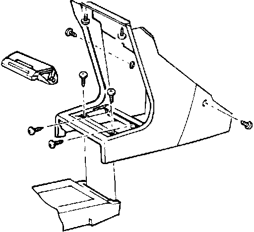
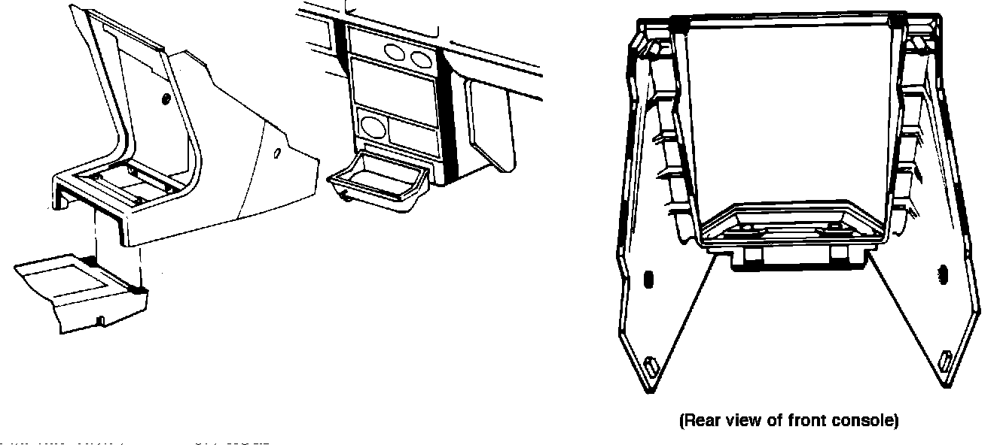

Front Console - Squeaking Noise
87acura01October 12, 1987
YEAR MODEL APPLICATION
'86-87 LEGEND ALL
87-002
Noise from Front Console (Supersedes 87-002, dated February 2, 1987)
PROBLEM
Contact between front console and dashboard results in squeaking noise.

CORRECTIVE ACTION
1. Remove the front console as shown.

2. Cut strips of adhesive-backed wool felt (P/N 06993-SA5-000) and apply strips to all points highlighted in red.
WARRANTY CLAIM INFORMATION
Operation number: 841099
Flat rate time: 0.5 hour
Failed P/N: 77290-SD4-A01ZA
Defect code: 042
Contention code: A99